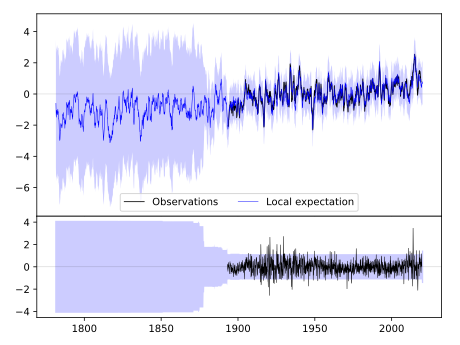
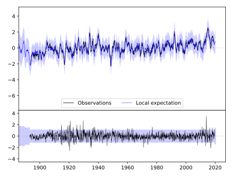
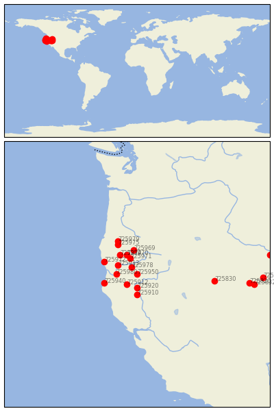

MT SHASTA [USA]


| Neighbour | Name | Country | Distance | Lon/Lat | Years |
|---|
| 725950 | MT SHASTA | USA | 0 | -122.3, 41.3 | 1893-2019 |
| 725978 | YREKA | USA | 51 | -122.6, 41.7 | 1893-2019 |
| 725912 | WEAVERVILLE | USA | 83 | -122.9, 40.7 | 1893-2019 |
| 725920 | REDDING MUNI AP | USA | 88 | -122.3, 40.5 | 1893-2020 |
| 725980 | ORLEANS | USA | 100 | -123.5, 41.3 | 1893-2019 |
| 725971 | ASHLAND | USA | 105 | -122.7, 42.2 | 1889-2019 |
| 725913 | HAPPY CAMP RS | USA | 107 | -123.4, 41.8 | 1893-2019 |
| 725970 | MEDFORD | USA | 132 | -122.9, 42.4 | 1929-2020 |
| 725910 | RED BLUFF | USA | 133 | -122.3, 40.1 | 1878-2000 |
| 725974 | GRANTS PASS | USA | 147 | -123.3, 42.4 | 1889-2019 |
| 725969 | PROSPECT 2 SW | USA | 156 | -122.5, 42.7 | 1893-2019 |
| 725940 | EUREKA WFO WOODLEY I | USA | 168 | -124.2, 40.8 | 1887-2020 |
| 725972 | BROOKINGS 2 SE | USA | 176 | -124.2, 42.0 | 1893-2019 |
| 725975 | RIDDLE | USA | 209 | -123.4, 43.0 | 1893-2019 |
| 725979 | ROSEBURG KQEN | USA | 229 | -123.4, 43.2 | 1877-2019 |
| 725830 | WINNEMUCCA AP | USA | 379 | -117.8, 40.9 | 1877-2020 |
| 725820 | ELKO FAA AP | USA | 547 | -115.8, 40.8 | 1930-2012 |
| 725832 | LAMOILLE | USA | 574 | -115.5, 40.7 | 1918-1970 |
| 725746 | WELLS | USA | 610 | -115.0, 41.1 | 1893-2019 |
| 725782 | HOLLISTER | USA | 649 | -114.6, 42.4 | 1894-2019 |